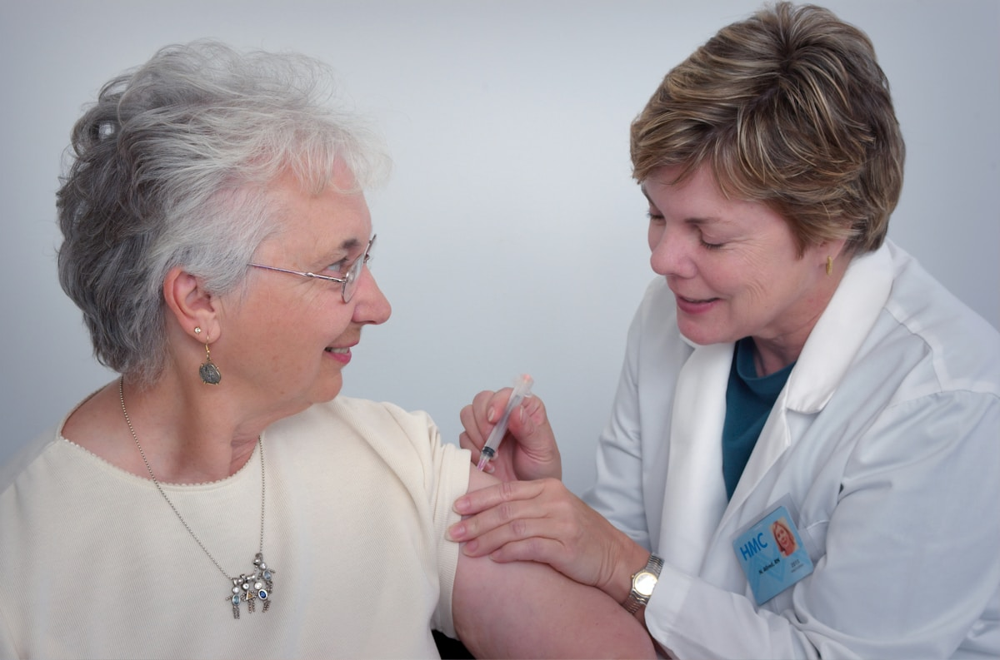

01
Pendamping harian
Menemani aktivitas ringan, mengingatkan jadwal, membantu mobilitas dasar, dan menjadi teman berkomunikasi.
Kami membantu keluarga menemukan pendamping harian yang sesuai kebutuhan lansia—mulai dari teman aktivitas, bantuan rutinitas, hingga koordinasi kebutuhan perawatan non-darurat.

Setiap keluarga memiliki rutinitas, kekhawatiran, dan tingkat bantuan yang berbeda.
Menemani aktivitas ringan, mengingatkan jadwal, membantu mobilitas dasar, dan menjadi teman berkomunikasi.
Laporan rutin dan jalur komunikasi untuk anak yang tinggal di kota berbeda.
Pendampingan rutinitas setelah pulang dari fasilitas kesehatan sesuai arahan keluarga dan tenaga medis.
Fokus pada komunikasi, aktivitas ringan, pengawasan, dan menjaga rutinitas tetap berjalan.
Kami akan menanyakan kondisi mobilitas, jam pendampingan, lokasi, serta kebutuhan khusus keluarga.
Kami memahami rutinitas, kebutuhan, dan kekhawatiran keluarga.
Profil pendamping dipilih berdasarkan kebutuhan dan lokasi.
Keluarga menilai komunikasi dan kecocokan pendamping.
Rutinitas penting dirangkum untuk keluarga.
Ceritakan kondisi orang tua dan bantuan yang paling dibutuhkan saat ini.